2023 National 5 Physics - Section 2 questions
Source: Scottish Qualifications Authority (SQA) / Qualifications Scotland. This is a StemInteract HTML companion, not an official HTML edition. Selectable text is supplied alongside original page images. Use the images or original PDF for equations, powers, fractions, vector notation, tables and diagrams; text extraction cannot fully preserve mathematical layout.
Jump to a question
PDF page 1
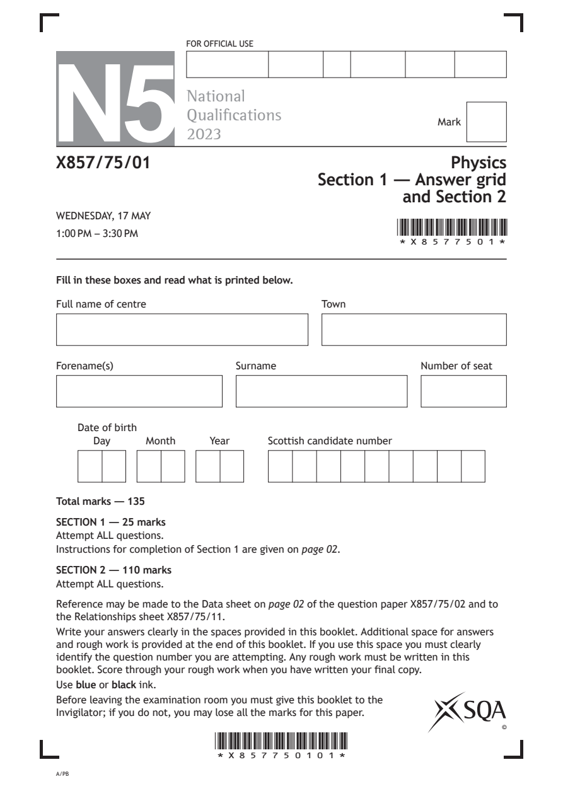
Selectable page text
FOR OFFICIAL USE
N5
National
Qualications
Mark
2023
X857/75/01 Physics
Section 1 — Answer grid
and Section 2
WEDNESDAY, 17 MAY
1:00 PM – 3:30 PM
*X8577501*
Fill in these boxes and read what is printed below.
Full name of centre Town
Forename(s) Surname Number of seat
Date of birth
Day Month Year Scottish candidate number
Total marks — 135
SECTION 1 — 25 marks
Attempt ALL questions.
Instructions for completion of Section 1 are given on page 02.
SECTION 2 — 110 marks
Attempt ALL questions.
Reference may be made to the Data sheet on page 02 of the question paper X857/75/02 and to
the Relationships sheet X857/75/11.
Write your answers clearly in the spaces provided in this booklet. Additional space for answers
and rough work is provided at the end of this booklet. If you use this space you must clearly
identify the question number you are attempting. Any rough work must be written in this
booklet. Score through your rough work when you have written your final copy.
Use blue or black ink.
Before leaving the examination room you must give this booklet to the
Invigilator; if you do not, you may lose all the marks for this paper.
©
*X857750101*
A/PBPDF page 2

Selectable page text
SECTION 1 — 25 marks
The questions for Section 1 are contained in the question paper X857/75/02.
Read these and record your answers on the answer grid on page 03 opposite.
Use blue or black ink. Do NOT use gel pens or pencil.
1. The answer to each question is either A, B, C, D or E. Decide what your answer is, then fill
in the appropriate bubble (see sample question below).
2. There is only one correct answer to each question.
3. Any rough work must be written in the additional space for answers and rough work at the
end of this booklet.
Sample question
The energy unit measured by the electricity meter in your home is the
A ampere
B kilowatt-hour
C watt
D coulomb
E volt.
The correct answer is B — kilowatt-hour. The answer B bubble has been clearly filled in
(see below).
A B C D E
Changing an answer
If you decide to change your answer, cancel your first answer by putting a cross through it (see
below) and fill in the answer you want. The answer below has been changed to D.
A B C D E
If you then decide to change back to an answer you have already scored out, put a tick (✓) to the
right of the answer you want, as shown below:
A B C D E A B C D E
or
*X857750102*
page 02PDF page 3

Selectable page text
SECTION 1 — Answer grid
*OBJ25AE1*
A B C D E
1
2
3
4
5
6
7
8
9
10
11
12
13
14
15
16
17
18
19
20
21
22
23
24
25
*X857750103*
page 03 [Turn overPDF page 4

Selectable page text
[BLANK PAGE]
DO NOT WRITE ON THIS PAGE
*X857750104*
page 04PDF page 5
Selectable page text
[Turn over for SECTION 2
DO NOT WRITE ON THIS PAGE
*X857750105*
page 05PDF page 6
Section 2, Question 1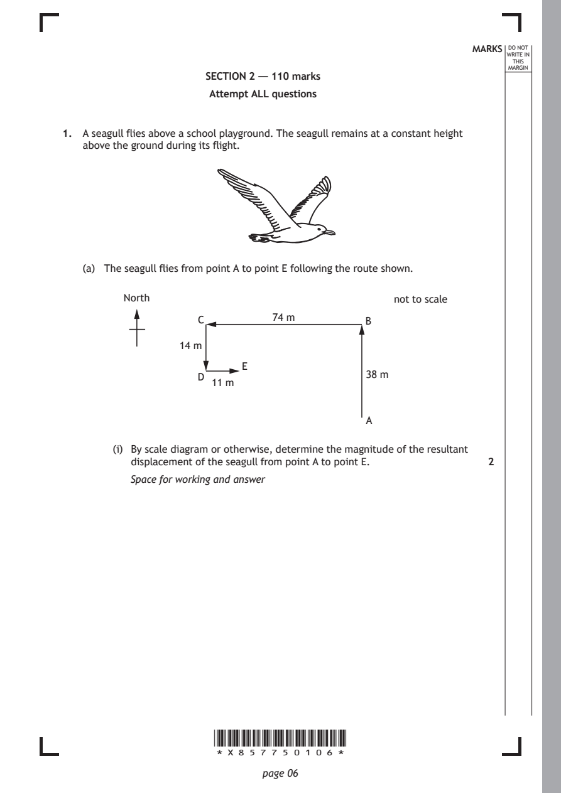
Selectable page text
MARKS _{W}^{D}_{R}^{O}_{I} _{T}^{N}OT
E IN
THIS
MARGIN
SECTION 2 — 110 marks
Attempt ALL questions
1. A seagull flies above a school playground. The seagull remains at a constant height
above the ground during its flight.
(a) The seagull flies from point A to point E following the route shown.
North not to scale
C 74 m B
14 m
E
D 38 m
11 m
A
(i) By scale diagram or otherwise, determine the magnitude of the resultant
displacement of the seagull from point A to point E. 2
Space for working and answer
*X857750106*
page 06PDF page 7
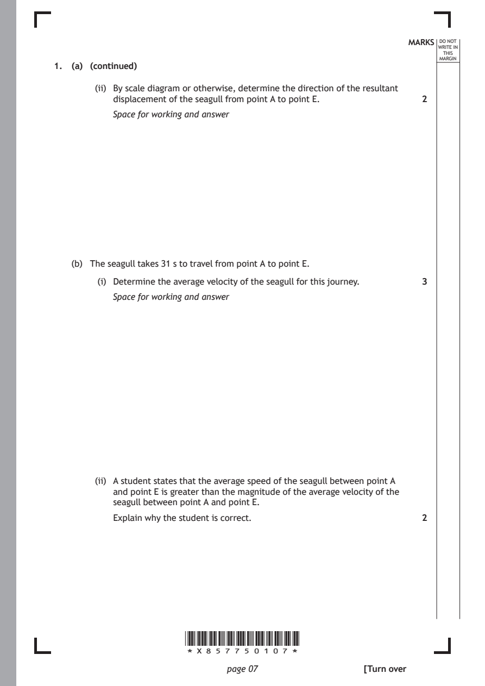
Selectable page text
MARKS _{W}^{D}_{R}^{O}_{I} _{T}^{N}OT
E IN
THIS
MARGIN
1. (a) (continued)
(ii) By scale diagram or otherwise, determine the direction of the resultant
displacement of the seagull from point A to point E. 2
Space for working and answer
(b) The seagull takes 31 s to travel from point A to point E.
(i) Determine the average velocity of the seagull for this journey. 3
Space for working and answer
(ii) A student states that the average speed of the seagull between point A
and point E is greater than the magnitude of the average velocity of the
seagull between point A and point E.
Explain why the student is correct. 2
*X857750107*
page 07 [Turn overPDF page 8
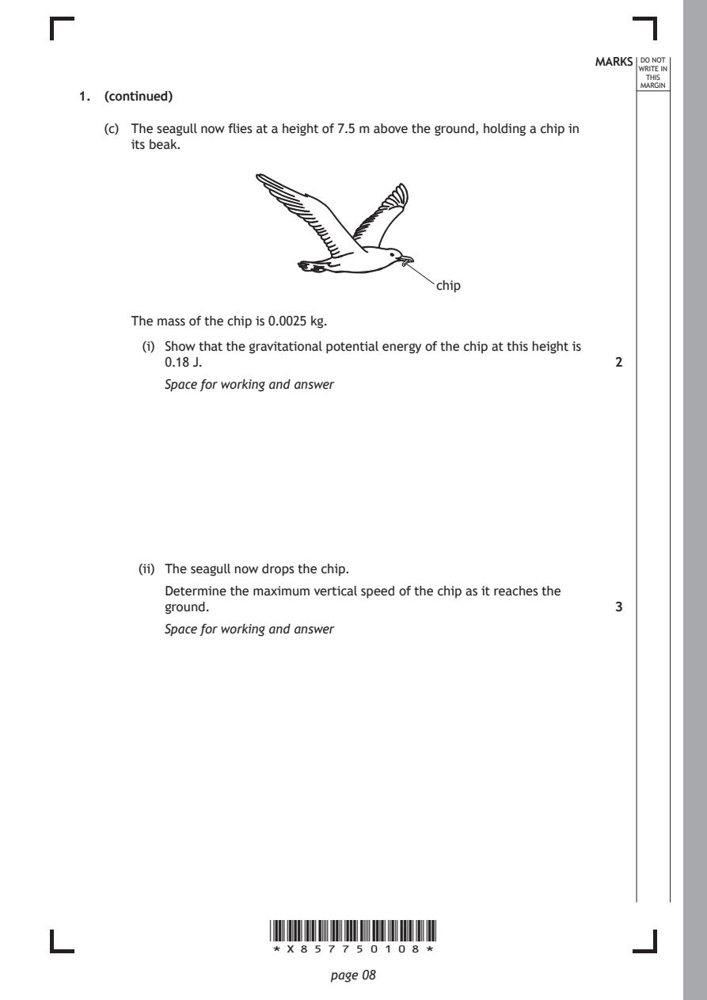
Selectable page text
MARKS _{W}^{D}_{R}^{O}_{I} _{T}^{N}OT
E IN
THIS
MARGIN
1. (continued)
(c) The seagull now flies at a height of 7.5 m above the ground, holding a chip in
its beak.
chip
The mass of the chip is 0.0025 kg.
(i) Show that the gravitational potential energy of the chip at this height is
0.18 J. 2
Space for working and answer
(ii) The seagull now drops the chip.
Determine the maximum vertical speed of the chip as it reaches the
ground. 3
Space for working and answer
*X857750108*
page 08PDF page 9
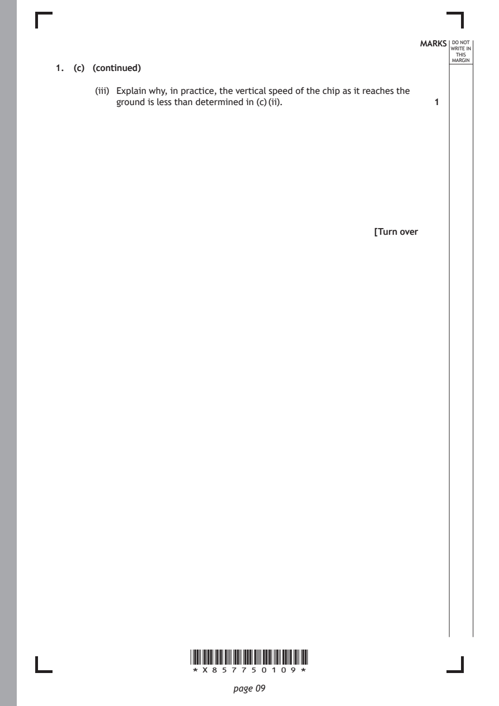
Selectable page text
MARKS _{W}^{D}_{R}^{O}_{I} _{T}^{N}OT
E IN
THIS
MARGIN
1. (c) (continued)
(iii) Explain why, in practice, the vertical speed of the chip as it reaches the
ground is less than determined in (c) (ii). 1
[Turn over
*X857750109*
page 09PDF page 10
Section 2, Question 2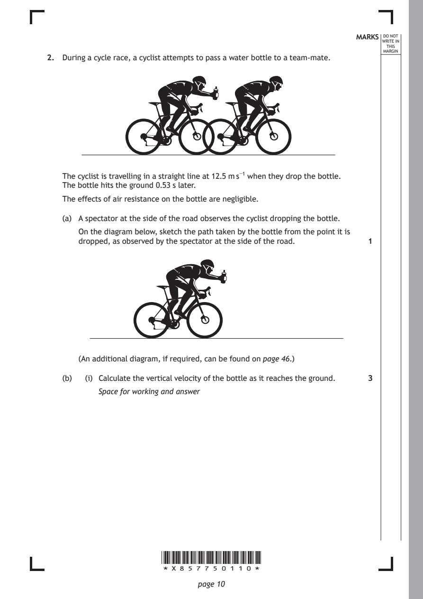
Selectable page text
MARKS _{W}^{D}_{R}^{O}_{I} _{T}^{N}OT
E IN
THIS
MARGIN
2. During a cycle race, a cyclist attempts to pass a water bottle to a team-mate.
The cyclist is travelling in a straight line at 12.5 m s⁻¹ when they drop the bottle.
The bottle hits the ground 0.53 s later.
The effects of air resistance on the bottle are negligible.
(a) A spectator at the side of the road observes the cyclist dropping the bottle.
On the diagram below, sketch the path taken by the bottle from the point it is
dropped, as observed by the spectator at the side of the road. 1
(An additional diagram, if required, can be found on page 46.)
(b) (i) Calculate the vertical velocity of the bottle as it reaches the ground. 3
Space for working and answer
*X857750110*
page 10PDF page 11
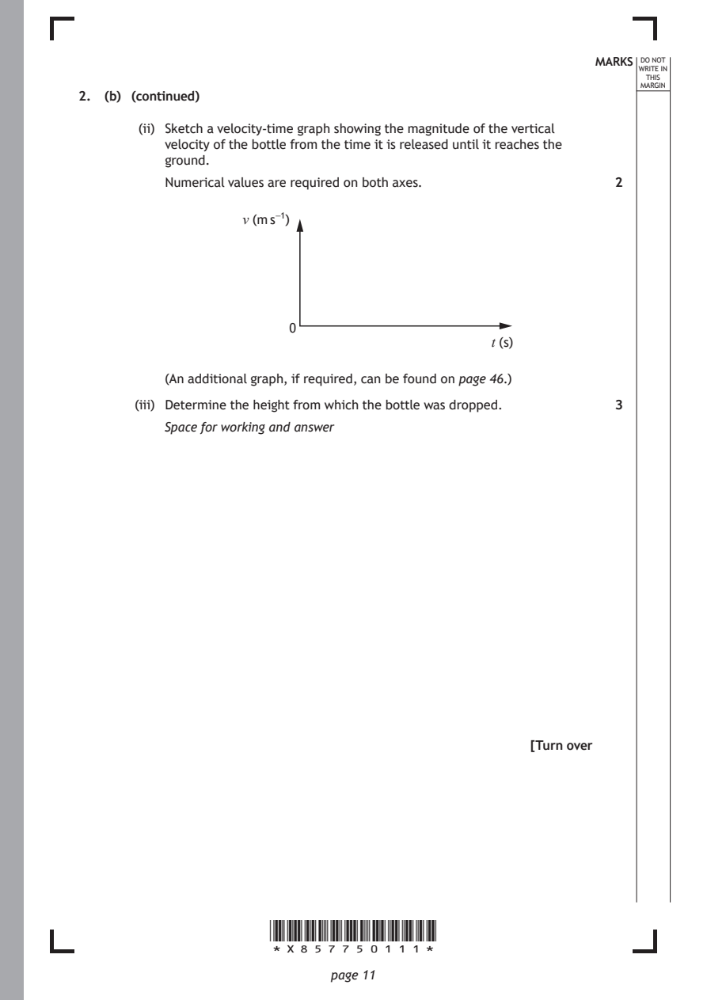
Selectable page text
MARKS _{W}^{D}_{R}^{O}_{I} _{T}^{N}OT
E IN
THIS
MARGIN
2. (b) (continued)
(ii) Sketch a velocity-time graph showing the magnitude of the vertical
velocity of the bottle from the time it is released until it reaches the
ground.
Numerical values are required on both axes. 2
v (m s⁻¹)
0
t (s)
(An additional graph, if required, can be found on page 46.)
(iii) Determine the height from which the bottle was dropped. 3
Space for working and answer
[Turn over
*X857750111*
page 11PDF page 12
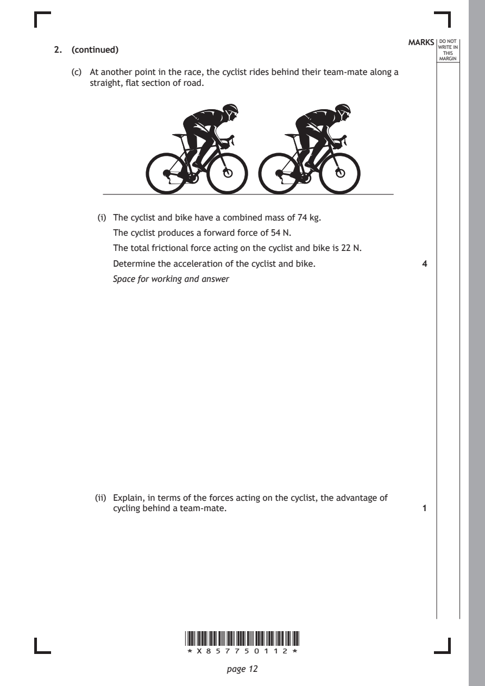
Selectable page text
MARKS _{W}^{D}_{R}^{O}_{I} _{T}^{N}OT
2. (continued) E IN
THIS
MARGIN
(c) At another point in the race, the cyclist rides behind their team-mate along a
straight, flat section of road.
(i) The cyclist and bike have a combined mass of 74 kg.
The cyclist produces a forward force of 54 N.
The total frictional force acting on the cyclist and bike is 22 N.
Determine the acceleration of the cyclist and bike. 4
Space for working and answer
(ii) Explain, in terms of the forces acting on the cyclist, the advantage of
cycling behind a team-mate. 1
*X857750112*
page 12PDF page 13
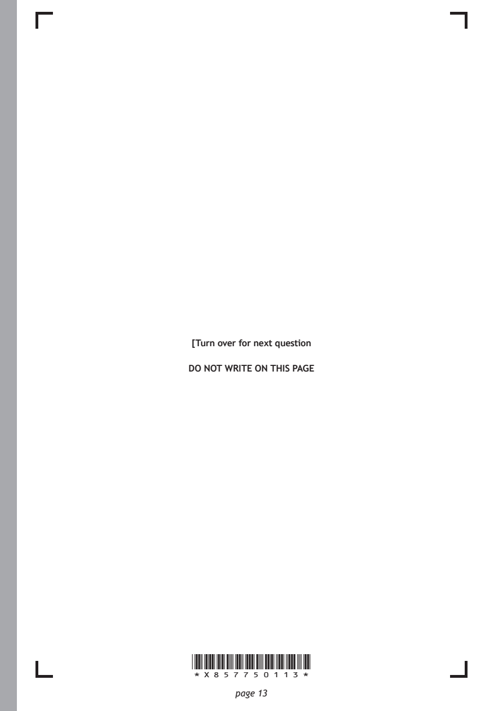
Selectable page text
[Turn over for next question
DO NOT WRITE ON THIS PAGE
*X857750113*
page 13PDF page 14
Section 2, Question 3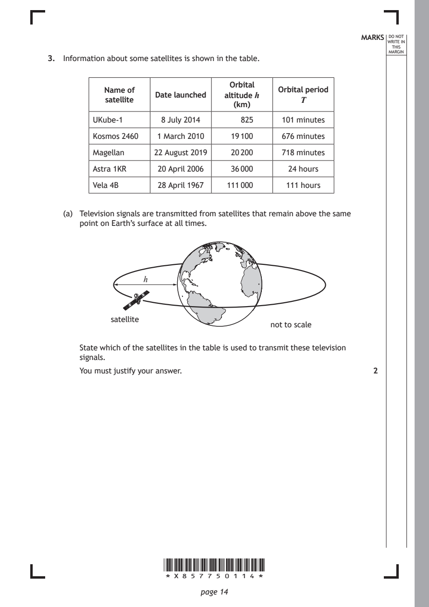
Selectable page text
MARKS _{W}^{D}_{R}^{O}_{I} _{T}^{N}OT
E IN
THIS
MARGIN
3. Information about some satellites is shown in the table.
Orbital
Name of Orbital period
Date launched altitude h
satellite T
(km)
UKube-1 8 July 2014 825 101 minutes
Kosmos 2460 1 March 2010 19 100 676 minutes
Magellan 22 August 2019 20 200 718 minutes
Astra 1KR 20 April 2006 36 000 24 hours
Vela 4B 28 April 1967 111 000 111 hours
(a) Television signals are transmitted from satellites that remain above the same
point on Earth’s surface at all times.
h
satellite
not to scale
State which of the satellites in the table is used to transmit these television
signals.
You must justify your answer. 2
*X857750114*
page 14PDF page 15
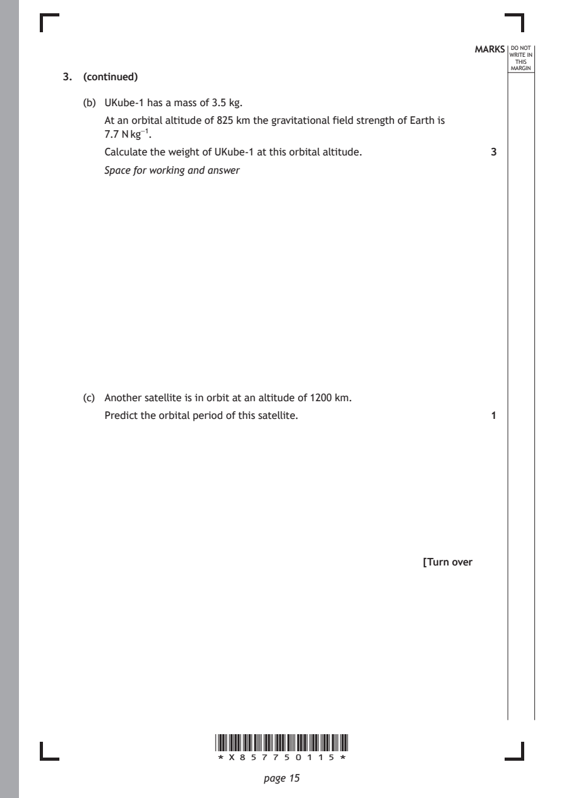
Selectable page text
MARKS _{W}^{D}_{R}^{O}_{I} _{T}^{N}OT
E IN
THIS
MARGIN
3. (continued)
(b) UKube-1 has a mass of 3.5 kg.
At an orbital altitude of 825 km the gravitational field strength of Earth is
7.7 N kg⁻¹.
Calculate the weight of UKube-1 at this orbital altitude. 3
Space for working and answer
(c) Another satellite is in orbit at an altitude of 1200 km.
Predict the orbital period of this satellite. 1
[Turn over
*X857750115*
page 15PDF page 16
Section 2, Question 4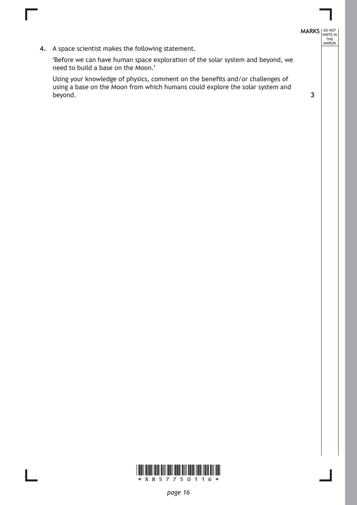
Selectable page text
MARKS _{W}^{D}_{R}^{O}_{I} _{T}^{N}OT
E IN
THIS
MARGIN
4. A space scientist makes the following statement.
‘Before we can have human space exploration of the solar system and beyond, we
need to build a base on the Moon.’
Using your knowledge of physics, comment on the benefits and/or challenges of
using a base on the Moon from which humans could explore the solar system and
beyond. 3
*X857750116*
page 16PDF page 17
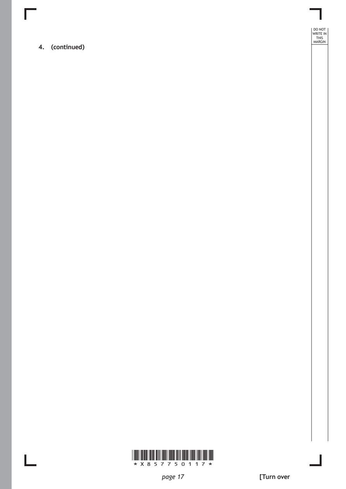
Selectable page text
DO NOT
WRITE IN
THIS
MARGIN
4. (continued)
*X857750117*
page 17 [Turn overPDF page 18
Section 2, Question 5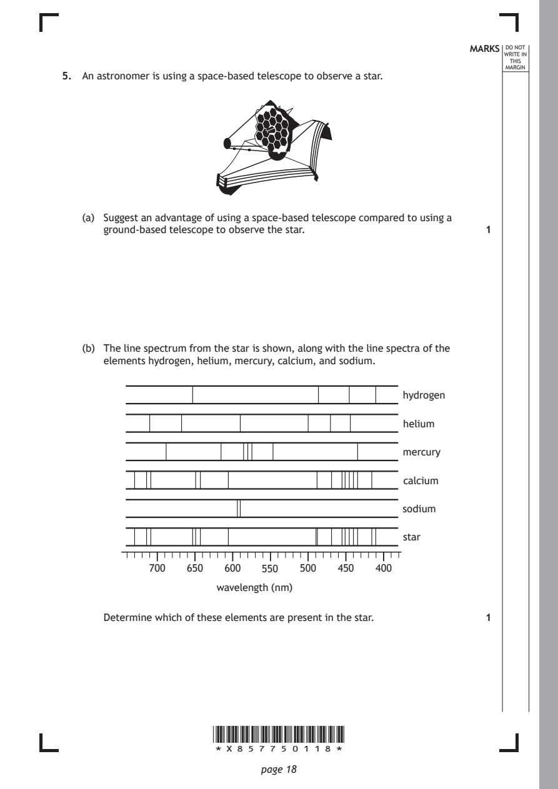
Selectable page text
MARKS _{W}^{D}_{R}^{O}_{I} _{T}^{N}OT
E IN
THIS
MARGIN
5. An astronomer is using a space-based telescope to observe a star.
(a) Suggest an advantage of using a space-based telescope compared to using a
ground-based telescope to observe the star. 1
(b) The line spectrum from the star is shown, along with the line spectra of the
elements hydrogen, helium, mercury, calcium, and sodium.
hydrogen
helium
mercury
calcium
sodium
star
700 650 600 550 500 450 400
wavelength (nm)
Determine which of these elements are present in the star. 1
*X857750118*
page 18PDF page 19
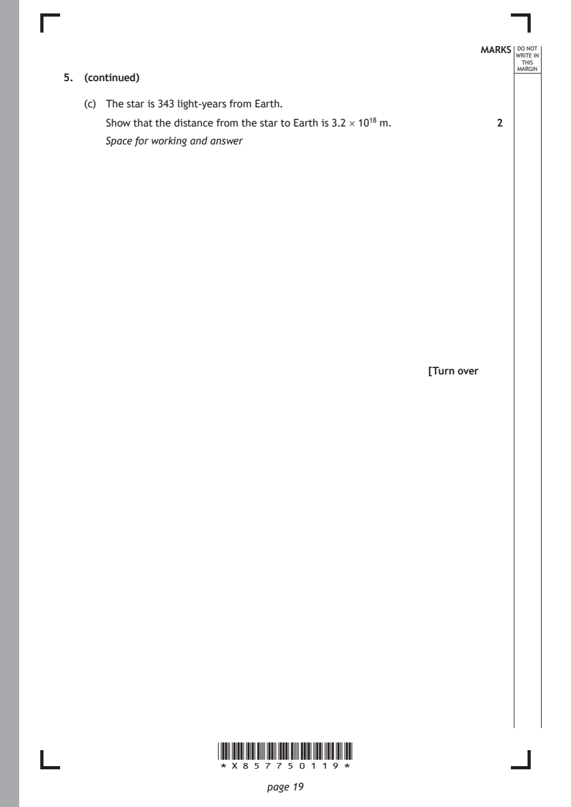
Selectable page text
MARKS _{W}^{D}_{R}^{O}_{I} _{T}^{N}OT
E IN
THIS
MARGIN
5. (continued)
(c) The star is 343 light-years from Earth.
Show that the distance from the star to Earth is 3.2 × 10¹⁸ m. 2
Space for working and answer
[Turn over
*X857750119*
page 19PDF page 20
Section 2, Question 6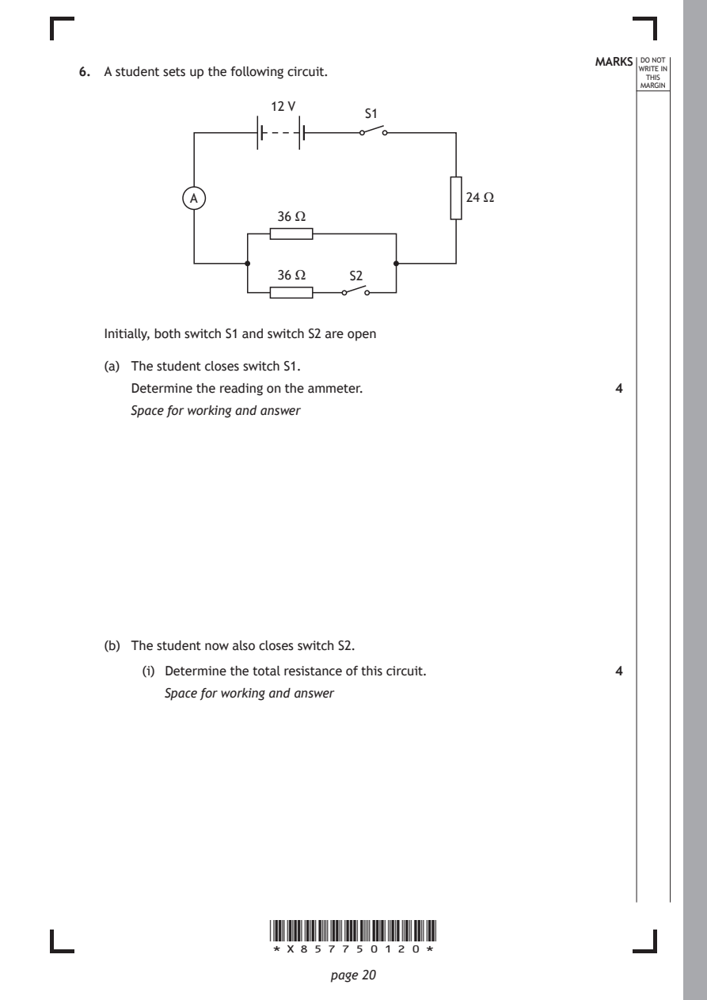
Selectable page text
MARKS _{W}^{D}_{R}^{O}_{I} _{T}^{N}OT
6. A student sets up the following circuit. E IN
THIS
MARGIN
12 V
S1
A 24 Ω
36 Ω
36 Ω S2
Initially, both switch S1 and switch S2 are open
(a) The student closes switch S1.
Determine the reading on the ammeter. 4
Space for working and answer
(b) The student now also closes switch S2.
(i) Determine the total resistance of this circuit. 4
Space for working and answer
*X857750120*
page 20PDF page 21
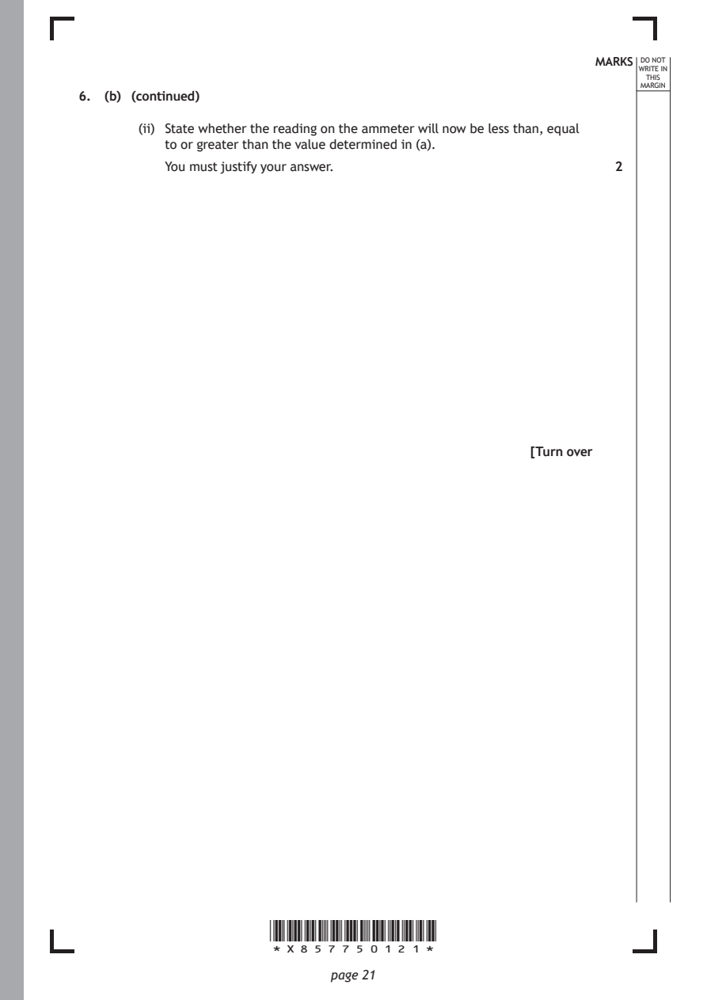
Selectable page text
MARKS _{W}^{D}_{R}^{O}_{I} _{T}^{N}OT
E IN
THIS
MARGIN
6. (b) (continued)
(ii) State whether the reading on the ammeter will now be less than, equal
to or greater than the value determined in (a).
You must justify your answer. 2
[Turn over
*X857750121*
page 21PDF page 22
Section 2, Question 7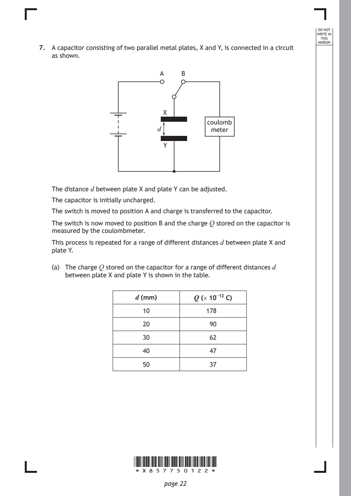
Selectable page text
DO NOT
WRITE IN
THIS
MARGIN
7. A capacitor consisting of two parallel metal plates, X and Y, is connected in a circuit
as shown.
A B
X
coulomb
d meter
Y
The distance d between plate X and plate Y can be adjusted.
The capacitor is initially uncharged.
The switch is moved to position A and charge is transferred to the capacitor.
The switch is now moved to position B and the charge Q stored on the capacitor is
measured by the coulombmeter.
This process is repeated for a range of different distances d between plate X and
plate Y.
(a) The charge Q stored on the capacitor for a range of different distances d
between plate X and plate Y is shown in the table.
d (mm) Q (× 10⁻¹² C)
10 178
20 90
30 62
40 47
50 37
*X857750122*
page 22PDF page 23
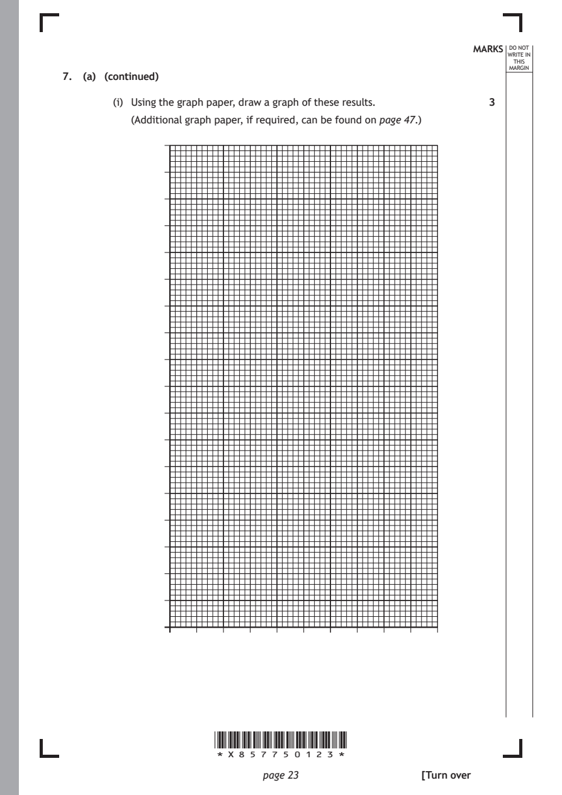
Selectable page text
MARKS _{W}^{D}_{R}^{O}_{I} _{T}^{N}OT
E IN
THIS
MARGIN
7. (a) (continued)
(i) Using the graph paper, draw a graph of these results. 3
(Additional graph paper, if required, can be found on page 47.)
*X857750123*
page 23 [Turn overPDF page 24
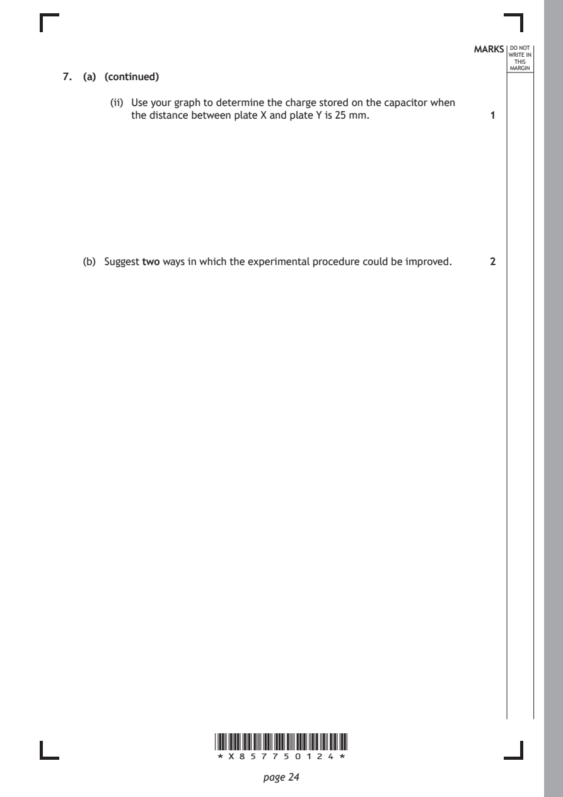
Selectable page text
MARKS _{W}^{D}_{R}^{O}_{I} _{T}^{N}OT
E IN
THIS
MARGIN
7. (a) (continued)
(ii) Use your graph to determine the charge stored on the capacitor when
the distance between plate X and plate Y is 25 mm. 1
(b) Suggest two ways in which the experimental procedure could be improved. 2
*X857750124*
page 24PDF page 25
Selectable page text
[Turn over for next question
DO NOT WRITE ON THIS PAGE
*X857750125*
page 25PDF page 26
Section 2, Question 8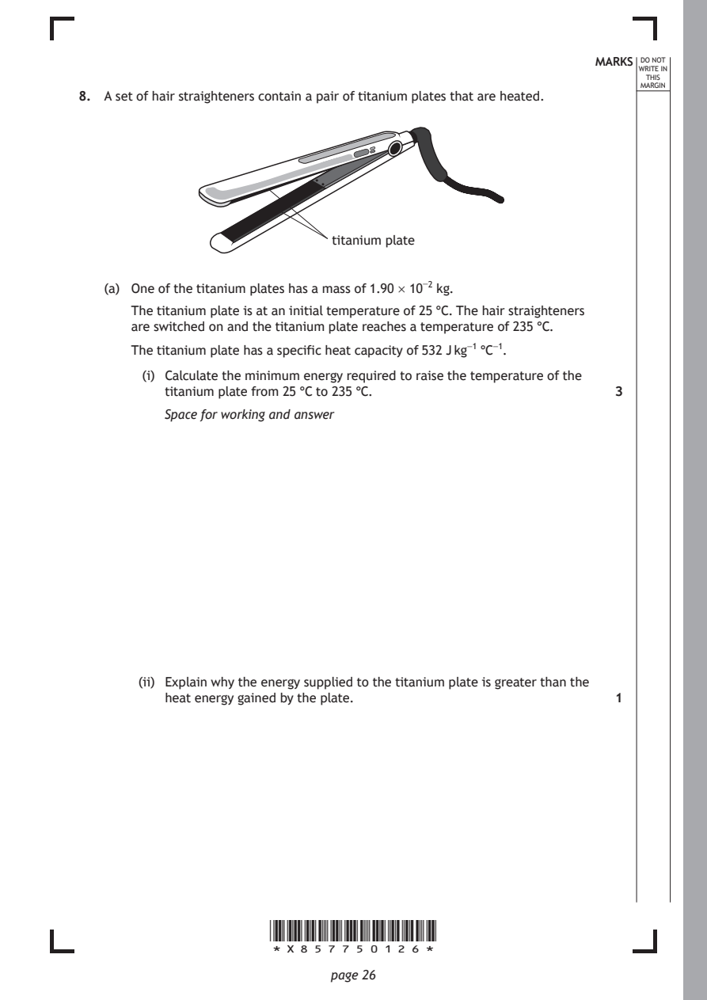
Selectable page text
MARKS _{W}^{D}_{R}^{O}_{I} _{T}^{N}OT
E IN
THIS
MARGIN
8. A set of hair straighteners contain a pair of titanium plates that are heated.
titanium plate
(a) One of the titanium plates has a mass of 1.90 × 10⁻² kg.
The titanium plate is at an initial temperature of 25 °C. The hair straighteners
are switched on and the titanium plate reaches a temperature of 235 °C.
The titanium plate has a specific heat capacity of 532 J kg⁻¹ °C⁻¹.
(i) Calculate the minimum energy required to raise the temperature of the
titanium plate from 25 °C to 235 °C. 3
Space for working and answer
(ii) Explain why the energy supplied to the titanium plate is greater than the
heat energy gained by the plate. 1
*X857750126*
page 26PDF page 27
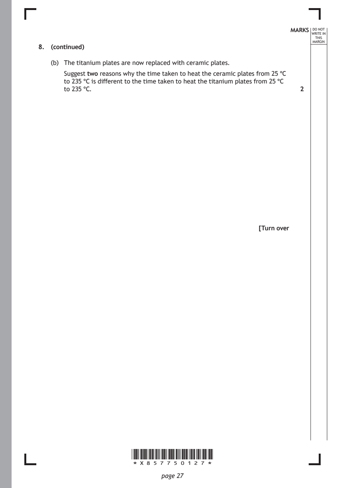
Selectable page text
MARKS _{W}^{D}_{R}^{O}_{I} _{T}^{N}OT
E IN
THIS
MARGIN
8. (continued)
(b) The titanium plates are now replaced with ceramic plates.
Suggest two reasons why the time taken to heat the ceramic plates from 25 °C
to 235 °C is different to the time taken to heat the titanium plates from 25 °C
to 235 °C. 2
[Turn over
*X857750127*
page 27PDF page 28
Section 2, Question 9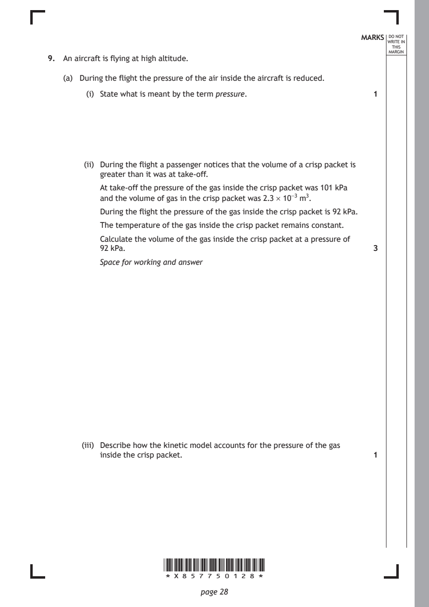
Selectable page text
MARKS _{W}^{D}_{R}^{O}_{I} _{T}^{N}OT
E IN
THIS
MARGIN
9. An aircraft is flying at high altitude.
(a) During the flight the pressure of the air inside the aircraft is reduced.
(i) State what is meant by the term pressure. 1
(ii) During the flight a passenger notices that the volume of a crisp packet is
greater than it was at take-off.
At take-off the pressure of the gas inside the crisp packet was 101 kPa
and the volume of gas in the crisp packet was 2.3 × 10⁻³ m³.
During the flight the pressure of the gas inside the crisp packet is 92 kPa.
The temperature of the gas inside the crisp packet remains constant.
Calculate the volume of the gas inside the crisp packet at a pressure of
92 kPa. 3
Space for working and answer
(iii) Describe how the kinetic model accounts for the pressure of the gas
inside the crisp packet. 1
*X857750128*
page 28PDF page 29
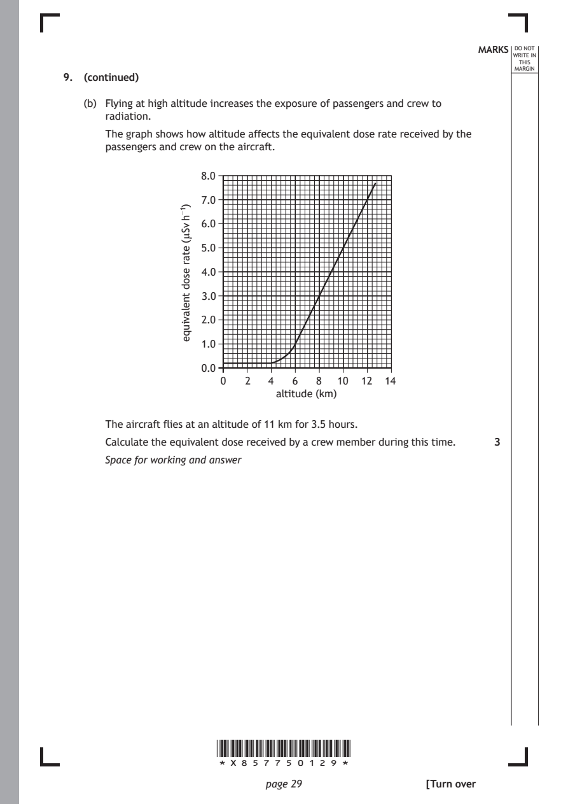
Selectable page text
MARKS _{W}^{D}_{R}^{O}_{I} _{T}^{N}OT
E IN
THIS
MARGIN
9. (continued)
(b) Flying at high altitude increases the exposure of passengers and crew to
radiation.
The graph shows how altitude affects the equivalent dose rate received by the
passengers and crew on the aircraft.
*X857750129*
page 29
)1−h
vSµ(
etar
esod
tnelaviuqe
8.0
7.0
6.0
5.0
4.0
3.0
2.0
1.0
0.0
0 2 4 6 8 10 12 14
altitude (km)
The aircraft flies at an altitude of 11 km for 3.5 hours.
Calculate the equivalent dose received by a crew member during this time. 3
Space for working and answer
[Turn overPDF page 30
Section 2, Question 10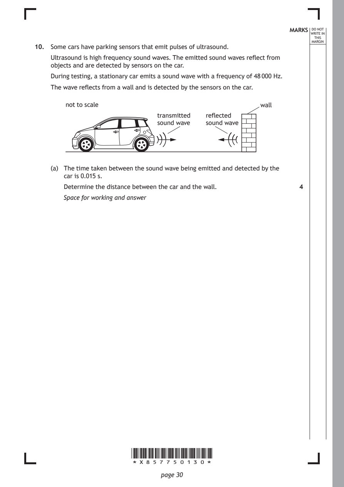
Selectable page text
MARKS _{W}^{D}_{R}^{O}_{I} _{T}^{N}OT
E IN
THIS
MARGIN
10. Some cars have parking sensors that emit pulses of ultrasound.
Ultrasound is high frequency sound waves. The emitted sound waves reflect from
objects and are detected by sensors on the car.
During testing, a stationary car emits a sound wave with a frequency of 48 000 Hz.
The wave reflects from a wall and is detected by the sensors on the car.
not to scale wall
transmitted reflected
sound wave sound wave
(a) The time taken between the sound wave being emitted and detected by the
car is 0.015 s.
Determine the distance between the car and the wall. 4
Space for working and answer
*X857750130*
page 30PDF page 31
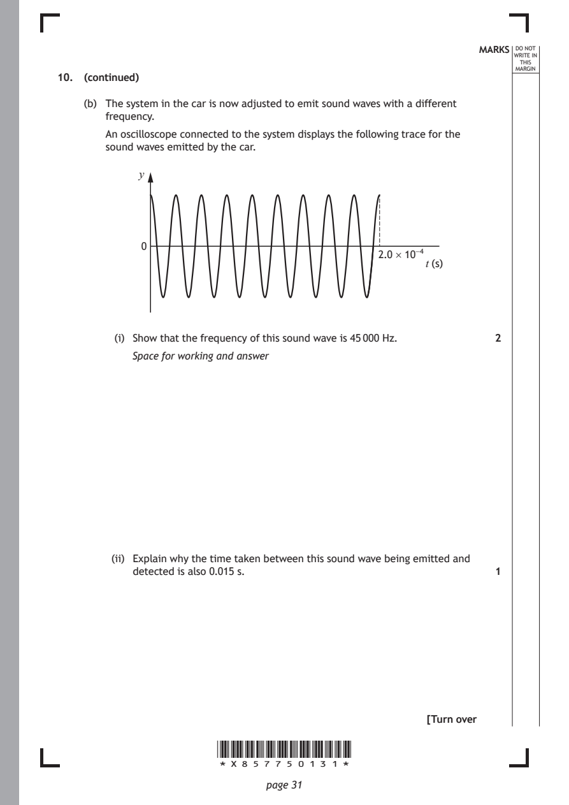
Selectable page text
MARKS _{W}^{D}_{R}^{O}_{I} _{T}^{N}OT
E IN
THIS
MARGIN
10. (continued)
(b) The system in the car is now adjusted to emit sound waves with a different
frequency.
An oscilloscope connected to the system displays the following trace for the
sound waves emitted by the car.
y
0
2.0 × 10⁻⁴
t (s)
(i) Show that the frequency of this sound wave is 45 000 Hz. 2
Space for working and answer
(ii) Explain why the time taken between this sound wave being emitted and
detected is also 0.015 s. 1
[Turn over
*X857750131*
page 31PDF page 32
Section 2, Question 11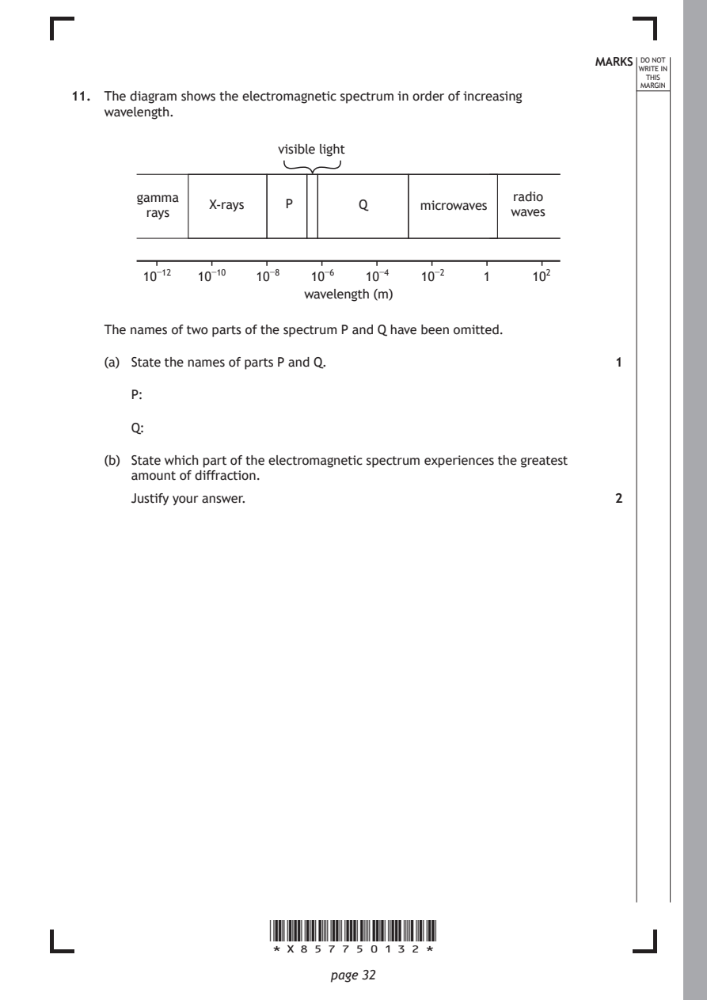
Selectable page text
MARKS _{W}^{D}_{R}^{O}_{I} _{T}^{N}OT
E IN
THIS
MARGIN
11. The diagram shows the electromagnetic spectrum in order of increasing
wavelength.
visible light
gamma radio
X-rays P Q microwaves
rays waves
10⁻¹² 10⁻¹⁰ 10⁻⁸ 10⁻⁶ 10⁻⁴ 10⁻² 1 10²
wavelength (m)
The names of two parts of the spectrum P and Q have been omitted.
(a) State the names of parts P and Q. 1
P:
Q:
(b) State which part of the electromagnetic spectrum experiences the greatest
amount of diffraction.
Justify your answer. 2
*X857750132*
page 32PDF page 33
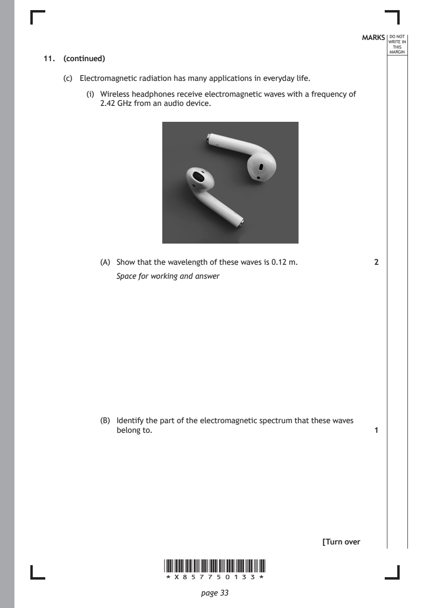
Selectable page text
MARKS _{W}^{D}_{R}^{O}_{I} _{T}^{N}OT
E IN
THIS
MARGIN
11. (continued)
(c) Electromagnetic radiation has many applications in everyday life.
(i) Wireless headphones receive electromagnetic waves with a frequency of
2.42 GHz from an audio device.
(A) Show that the wavelength of these waves is 0.12 m. 2
Space for working and answer
(B) Identify the part of the electromagnetic spectrum that these waves
belong to. 1
[Turn over
*X857750133*
page 33PDF page 34
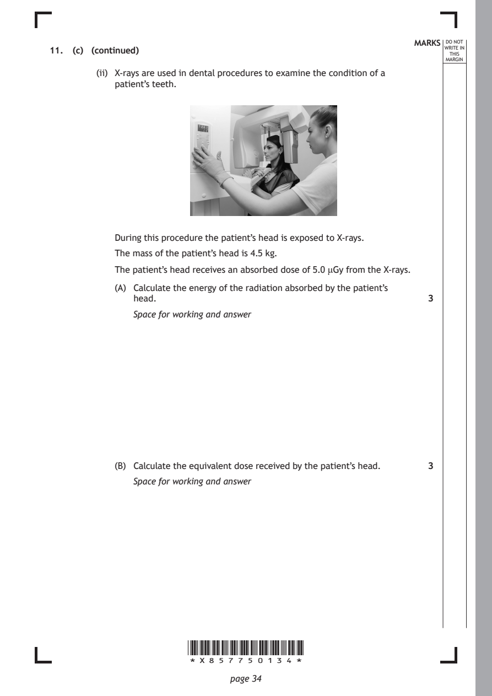
Selectable page text
MARKS _{W}^{D}_{R}^{O}_{I} _{T}^{N}OT
11. (c) (continued) E IN
THIS
MARGIN
(ii) X-rays are used in dental procedures to examine the condition of a
patient’s teeth.
During this procedure the patient’s head is exposed to X-rays.
The mass of the patient’s head is 4.5 kg.
The patient’s head receives an absorbed dose of 5.0 μGy from the X-rays.
(A) Calculate the energy of the radiation absorbed by the patient’s
head. 3
Space for working and answer
(B) Calculate the equivalent dose received by the patient’s head. 3
Space for working and answer
*X857750134*
page 34PDF page 35

Selectable page text
[Turn over for next question
DO NOT WRITE ON THIS PAGE
*X857750135*
page 35PDF page 36
Section 2, Question 12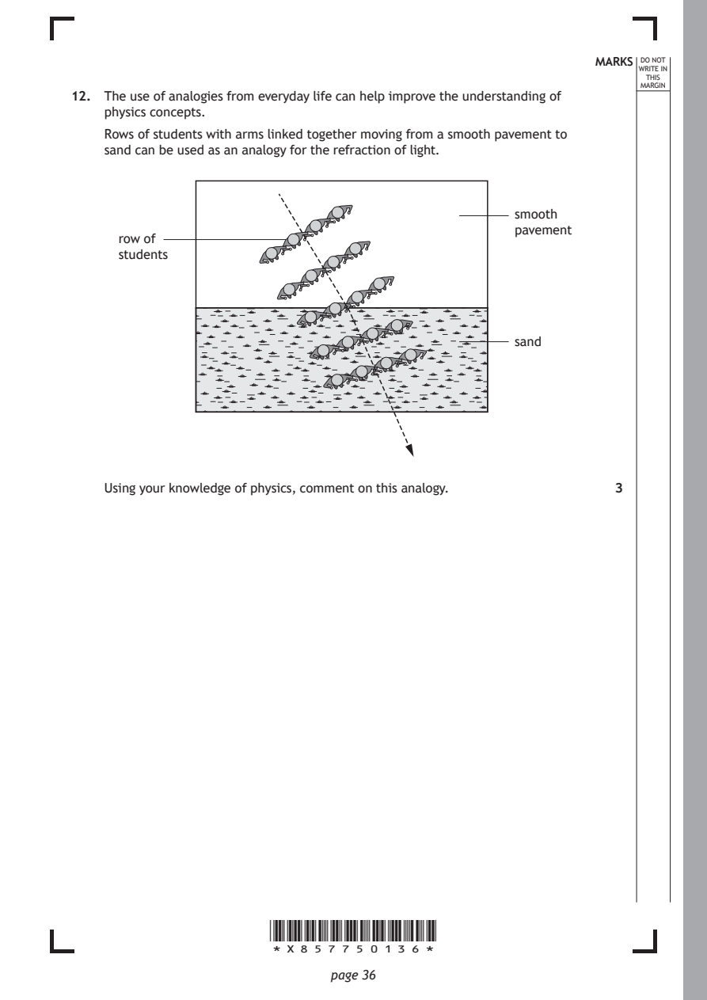
Selectable page text
MARKS _{W}^{D}_{R}^{O}_{I} _{T}^{N}OT
E IN
THIS
MARGIN
12. The use of analogies from everyday life can help improve the understanding of
physics concepts.
Rows of students with arms linked together moving from a smooth pavement to
sand can be used as an analogy for the refraction of light.
smooth
pavement
row of
students
sand
Using your knowledge of physics, comment on this analogy. 3
*X857750136*
page 36PDF page 37
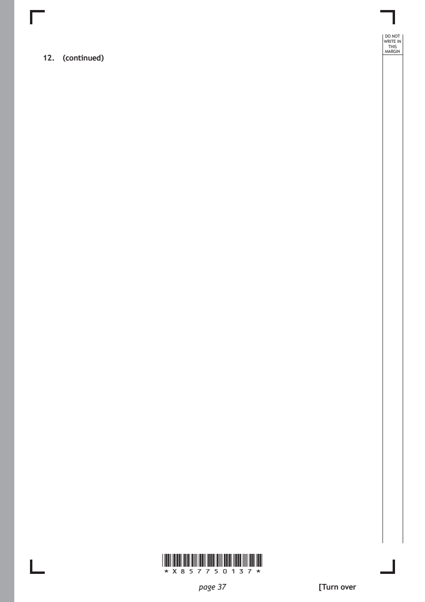
Selectable page text
DO NOT
WRITE IN
THIS
MARGIN
12. (continued)
*X857750137*
page 37 [Turn overPDF page 38
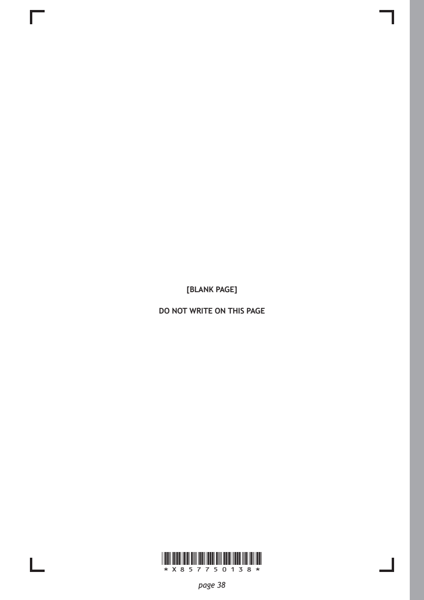
Selectable page text
[BLANK PAGE]
DO NOT WRITE ON THIS PAGE
*X857750138*
page 38PDF page 39
Section 2, Question 13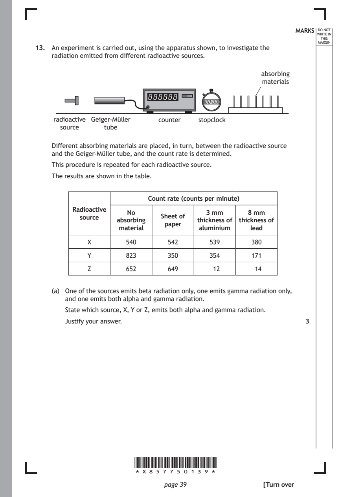
Selectable page text
MARKS _{W}^{D}_{R}^{O}_{I} _{T}^{N}OT
E IN
THIS
MARGIN
13. An experiment is carried out, using the apparatus shown, to investigate the
radiation emitted from different radioactive sources.
absorbing
materials
radioactive Geiger-Müller counter stopclock
source tube
Different absorbing materials are placed, in turn, between the radioactive source
and the Geiger-Müller tube, and the count rate is determined.
This procedure is repeated for each radioactive source.
The results are shown in the table.
Count rate (counts per minute)
Radioactive
No 3 mm 8 mm
source Sheet of
absorbing thickness of thickness of
paper
material aluminium lead
X 540 542 539 380
Y 823 350 354 171
Z 652 649 12 14
(a) One of the sources emits beta radiation only, one emits gamma radiation only,
and one emits both alpha and gamma radiation.
State which source, X, Y or Z, emits both alpha and gamma radiation.
Justify your answer. 3
*X857750139*
page 39 [Turn overPDF page 40
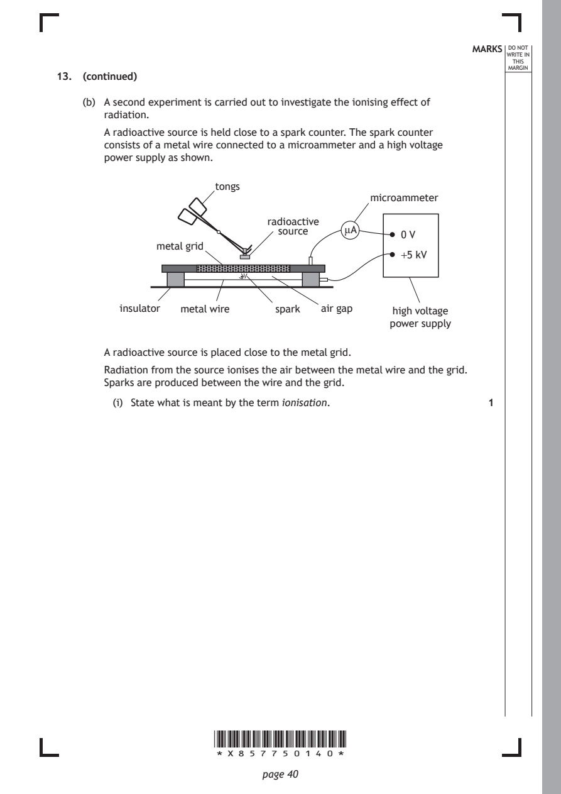
Selectable page text
MARKS _{W}^{D}_{R}^{O}_{I} _{T}^{N}OT
E IN
THIS
MARGIN
13. (continued)
(b) A second experiment is carried out to investigate the ionising effect of
radiation.
A radioactive source is held close to a spark counter. The spark counter
consists of a metal wire connected to a microammeter and a high voltage
power supply as shown.
tongs
microammeter
radioactive
source µA
0 V
metal grid
+5 kV
insulator metal wire spark air gap high voltage
power supply
A radioactive source is placed close to the metal grid.
Radiation from the source ionises the air between the metal wire and the grid.
Sparks are produced between the wire and the grid.
(i) State what is meant by the term ionisation. 1
*X857750140*
page 40PDF page 41
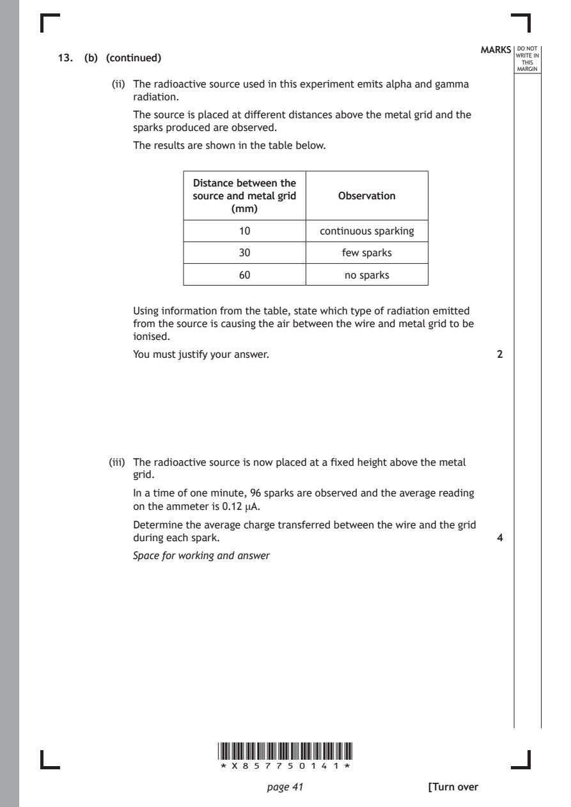
Selectable page text
MARKS _{W}^{D}_{R}^{O}_{I} _{T}^{N}OT
13. (b) (continued) E IN
THIS
MARGIN
(ii) The radioactive source used in this experiment emits alpha and gamma
radiation.
The source is placed at different distances above the metal grid and the
sparks produced are observed.
The results are shown in the table below.
Distance between the
source and metal grid Observation
(mm)
10 continuous sparking
30 few sparks
60 no sparks
Using information from the table, state which type of radiation emitted
from the source is causing the air between the wire and metal grid to be
ionised.
You must justify your answer. 2
(iii) The radioactive source is now placed at a fixed height above the metal
grid.
In a time of one minute, 96 sparks are observed and the average reading
on the ammeter is 0.12 μA.
Determine the average charge transferred between the wire and the grid
during each spark. 4
Space for working and answer
*X857750141*
page 41 [Turn overPDF page 42
Section 2, Question 14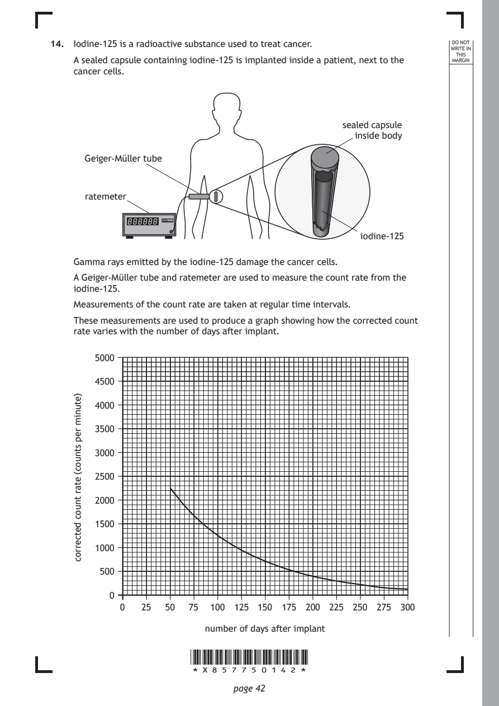
Selectable page text
14. Iodine-125 is a radioactive substance used to treat cancer. DO NOT
WRITE IN
THIS
A sealed capsule containing iodine-125 is implanted inside a patient, next to the MARGIN
cancer cells.
sealed capsule
inside body
Geiger-Müller tube
ratemeter
iodine-125
Gamma rays emitted by the iodine-125 damage the cancer cells.
A Geiger-Müller tube and ratemeter are used to measure the count rate from the
iodine-125.
Measurements of the count rate are taken at regular time intervals.
These measurements are used to produce a graph showing how the corrected count
rate varies with the number of days after implant.
number of days after implant
*X857750142*
page 42
)etunim
rep
stnuoc(
etar
tnuoc
detcerroc
5000
4500
4000
3500
3000
2500
2000
1500
1000
500
0
0 25 50 75 100 125 150 175 200 225 250 275 300PDF page 43
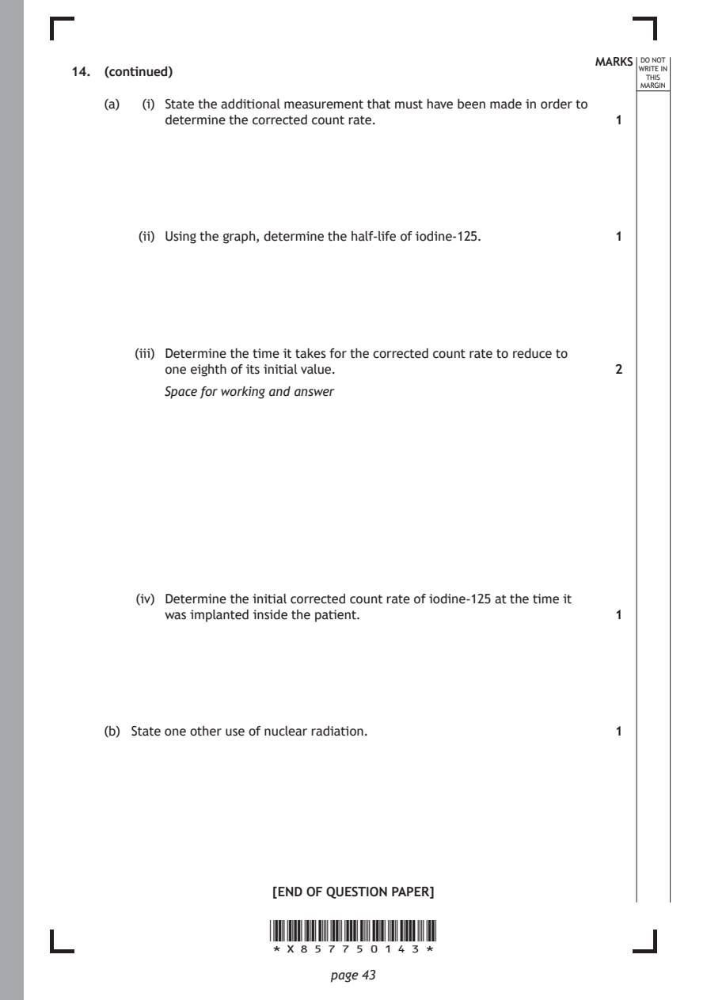
Selectable page text
MARKS _{W}^{D}_{R}^{O}_{I} _{T}^{N}OT
14. (continued) E IN
THIS
MARGIN
(a) (i) State the additional measurement that must have been made in order to
determine the corrected count rate. 1
(ii) Using the graph, determine the half-life of iodine-125. 1
(iii) Determine the time it takes for the corrected count rate to reduce to
one eighth of its initial value. 2
Space for working and answer
(iv) Determine the initial corrected count rate of iodine-125 at the time it
was implanted inside the patient. 1
(b) State one other use of nuclear radiation. 1
[END OF QUESTION PAPER]
*X857750143*
page 43PDF page 44
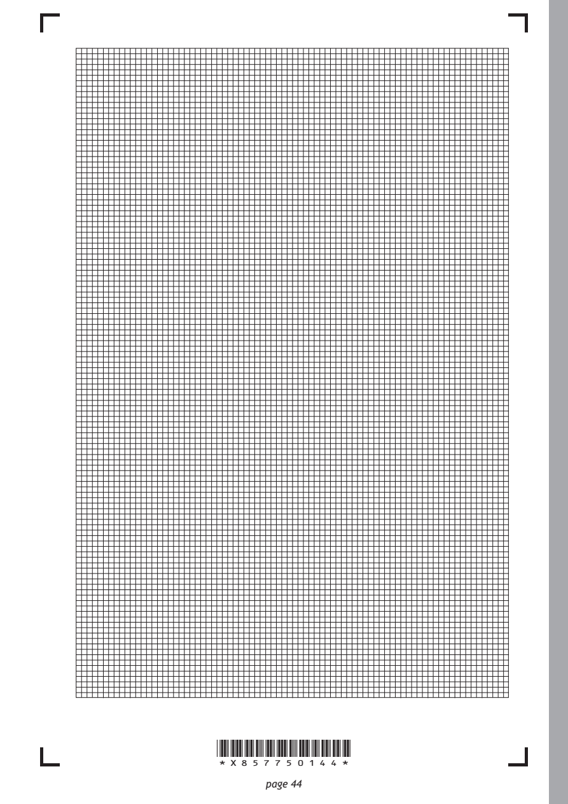
Selectable page text
*X857750144*
page 44PDF page 45
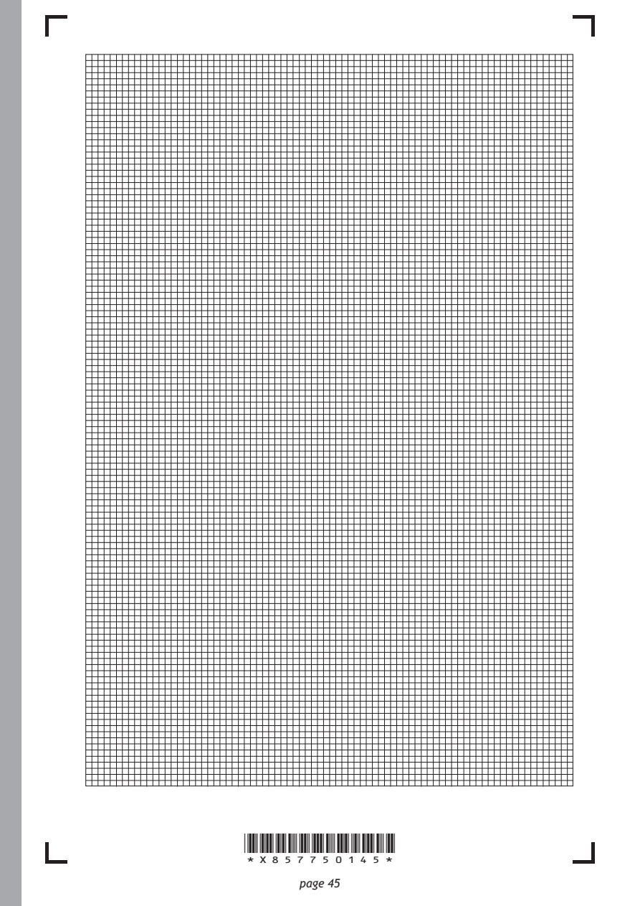
Selectable page text
*X857750145*
page 45PDF page 46
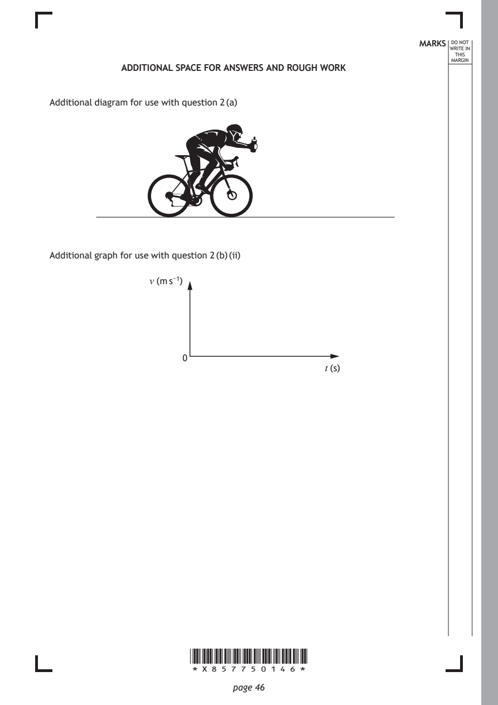
Selectable page text
MARKS _{W}^{D}_{R}^{O}_{I} _{T}^{N}OT
E IN
THIS
MARGIN
ADDITIONAL SPACE FOR ANSWERS AND ROUGH WORK
Additional diagram for use with question 2 (a)
Additional graph for use with question 2 (b) (ii)
v (m s⁻¹)
0
t (s)
*X857750146*
page 46PDF page 47
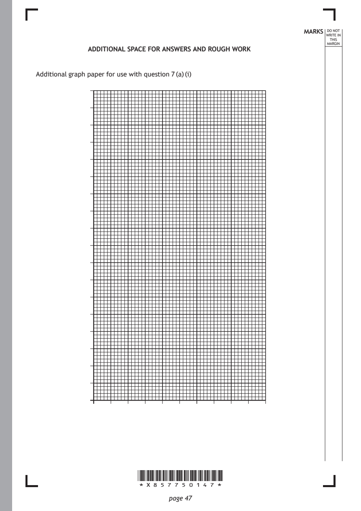
Selectable page text
MARKS _{W}^{D}_{R}^{O}_{I} _{T}^{N}OT
E IN
THIS
MARGIN
ADDITIONAL SPACE FOR ANSWERS AND ROUGH WORK
Additional graph paper for use with question 7 (a) (i)
*X857750147*
page 47PDF page 48

Selectable page text
MARKS _{W}^{D}_{R}^{O}_{I} _{T}^{N}OT
E IN
THIS
MARGIN
ADDITIONAL SPACE FOR ANSWERS AND ROUGH WORK
*X857750148*
page 48PDF page 49

Selectable page text
MARKS _{W}^{D}_{R}^{O}_{I} _{T}^{N}OT
E IN
THIS
MARGIN
ADDITIONAL SPACE FOR ANSWERS AND ROUGH WORK
*X857750149*
page 49PDF page 50
Selectable page text
[BLANK PAGE]
DO NOT WRITE ON THIS PAGE
*X857750150*
page 50PDF page 51
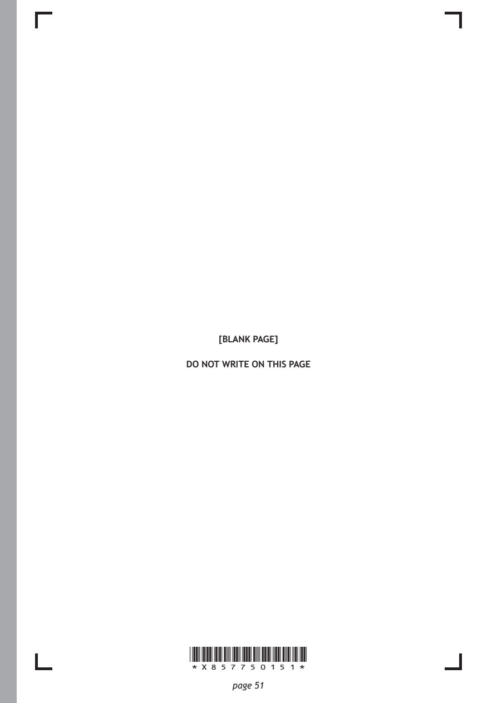
Selectable page text
[BLANK PAGE]
DO NOT WRITE ON THIS PAGE
*X857750151*
page 51PDF page 52
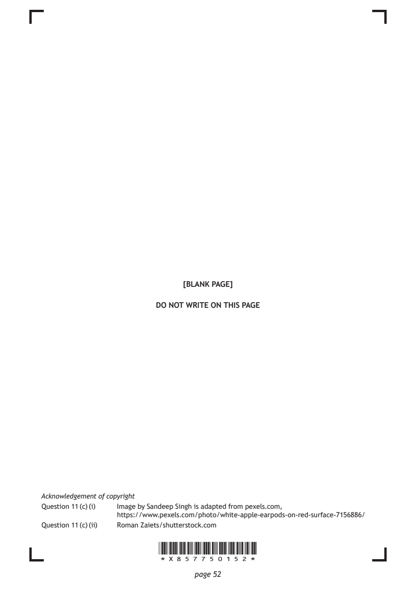
Selectable page text
[BLANK PAGE]
DO NOT WRITE ON THIS PAGE
Acknowledgement of copyright
Question 11 (c) (i) Image by Sandeep Singh is adapted from pexels.com,
https://www.pexels.com/photo/white-apple-earpods-on-red-surface-7156886/
Question 11 (c) (ii) Roman Zaiets/shutterstock.com
*X857750152*
page 52